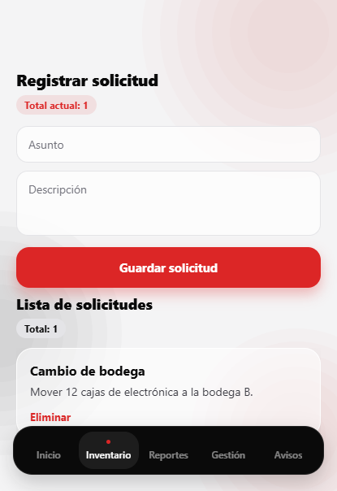
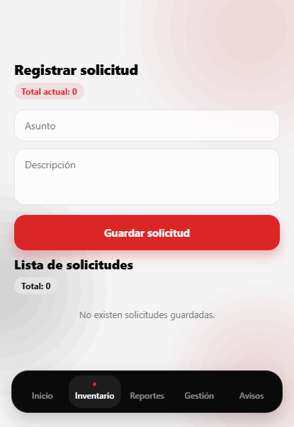

Compartir el arreglo de solicitudes entre dos componentes sin pasarse datos por props. Cuando uno agrega o elimina, el otro debe actualizarse solo.
La práctica quedó en una sola funcionalidad: las solicitudes de la pantalla Inventario.
src/context/SolicitudesContext.jsx guarda el arreglo y expone agregarSolicitud() y eliminarSolicitud().FormularioSolicitud registra una solicitud y muestra el total.ListaSolicitudes muestra las tarjetas, el total y el botón Eliminar.
Los dos componentes usan useSolicitudes(). Ninguno recibe la lista por props.
SQLite solo conserva los registros al salir de la pantalla. El estado que ambos ven es el del contexto.


SolicitudesProvider envuelve el formulario y la lista. Dentro guarda
solicitudes con useState. agregarSolicitud() inserta el registro
y hace setSolicitudes con la solicitud nueva al inicio del arreglo.
eliminarSolicitud() borra el registro y deja en el arreglo solo las que tienen otro id.
React vuelve a dibujar a todos los componentes que consumen ese contexto. Por eso el total del formulario y el total de la lista cambian en el mismo momento.
Si se quita el provider, useSolicitudes() no encuentra el estado y los componentes
dejan de compartir el arreglo. El error común es poner un useState distinto en cada
componente: al guardar en el formulario, la lista no se entera.